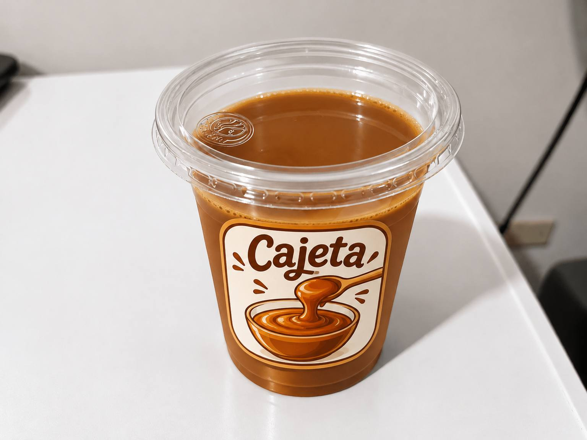
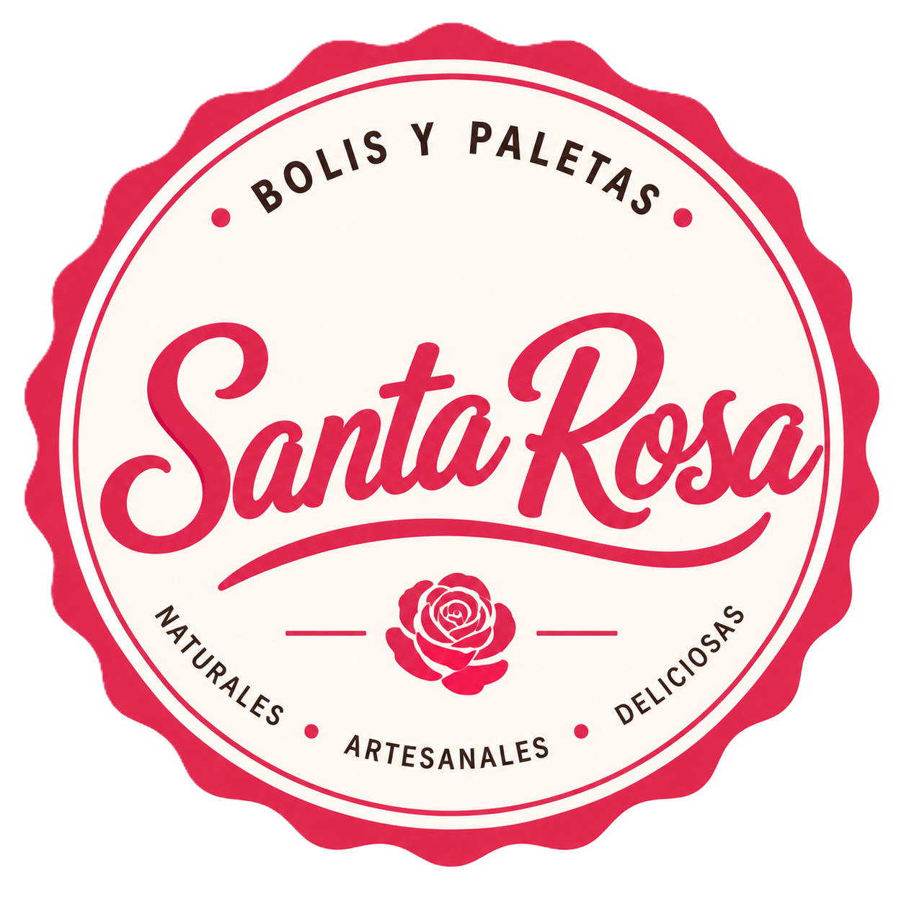
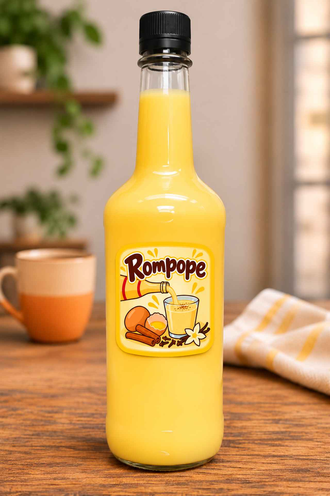

Cajeta
1 kg - $138.00
1/2 kg - $75.00

Además de nuestros bolis, paletas y nieves, también elaboramos otras especialidades.
Conoce nuestra selección de postres.
Ver postres →Productos propios de Santa Rosa. Consulta presentaciones, precios y disponibilidad por WhatsApp.

1 kg - $138.00
1/2 kg - $75.00

1 L - $105.00
Consulta por WhatsApp los días, horarios y punto de entrega. La ubicación se mostrará con mapa y fotografía cuando esté definida.